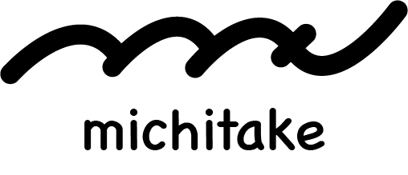

陸上教室・運動プログラムを通じて、 困難を抱える青少年の自立を支えます。
一般社団法人michitakeは、2024年12月に設立した青少年支援団体です。
「心も身体も満ちて長ける」——この言葉を理念に、スポーツを入口とした心理的支援・居場所づくりを実践しています。
陸上競技という共通の体験を通じて、子どもたちが自分の可能性に気づき、社会とつながるきっかけをつくること。それがmichitakeの使命です。
michitakeは現在、以下の活動を継続しています。
活動へのご参加・ご支援・連携のご相談など、 お気軽にご連絡ください。